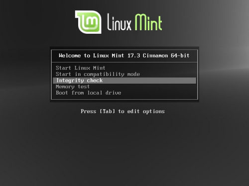
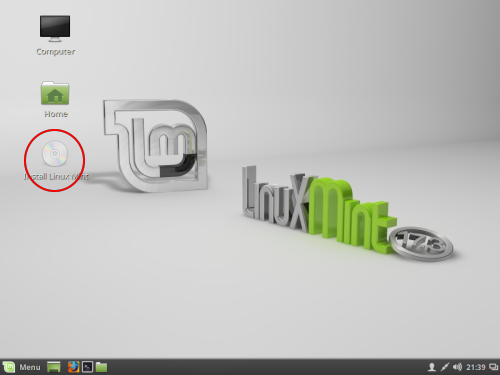
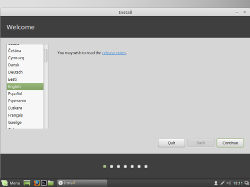
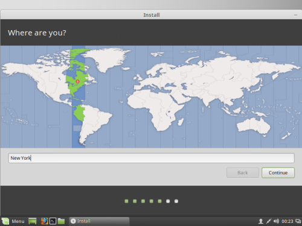
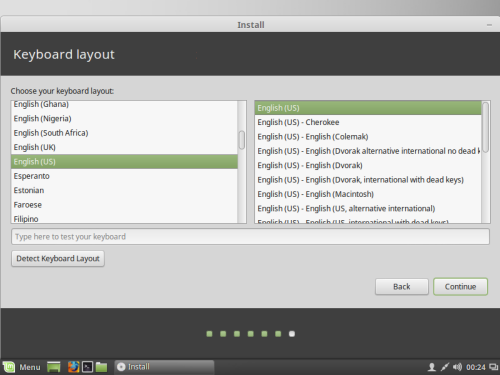
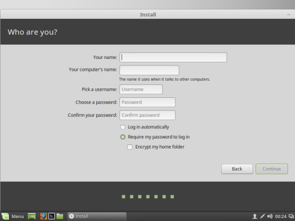
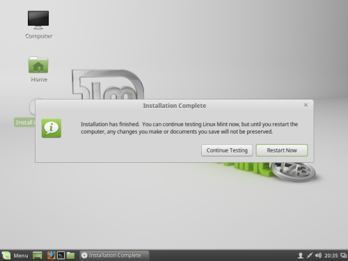

The instructions on this page will walk you through the process of
installing the Linux Mint distribution of GNU/Linux on your PC.
Linux Mint is based on Ubuntu, one of the most widely used and
supported distributions of GNU/Linux, you can read more about
Linux Mint here.
Download the appropriate ISO for your computer below
Once the download is finished burn it to a blank CD by right clicking on the downloaded ISO file and choosing "Burn disc image".
Boot from the CD by hitting the F12 or Delete key at the screen displaying the manufacturer logo and name for your computer and selecting your CD drive.
At the screen showing a countdown hit the tab key and use the arrow keys to select the Integrity Check entry. The check should complete and ask you to reboot.

Repeat the process to boot from the CD this time waiting for the countdown to complete. The screen should show the image below.
Once the desktop loads double click the Install Linux Mint icon.

In the installer window choose your language and click continue

If you are not online, left click the icon to the right of the person icon on the right side of the taskbar and click network connections to connect to your network.
Select the appropriate partitioning option for your situation, most likely Erase disk and install Linux Mint or Install Linux Mint alongside Microsoft Windows
Select your time zone from the map.

Select your keyboard layout.

Create a user and password. The first screen will ask you to set a password for the root user. To learn more about the root user see here

The installation will complete and display the screen below.

Now that you have installed Linux Mint you are on your way to becoming a Linux poweruser. For more information see the FAQ and resources.